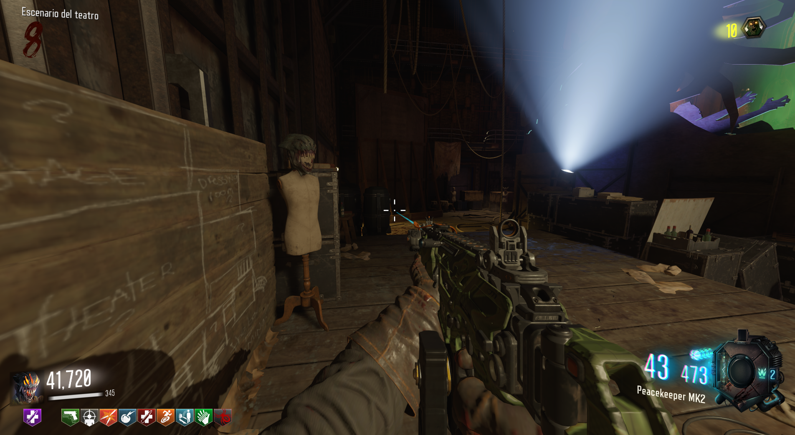
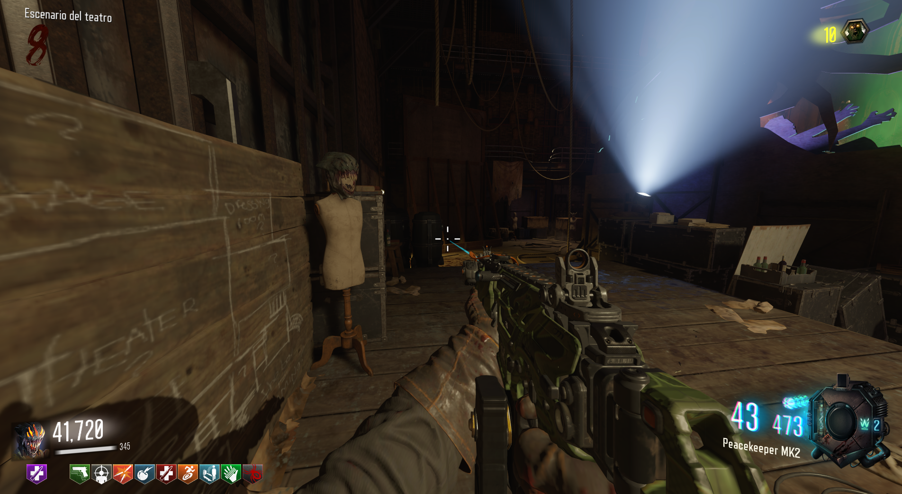

Máscara del Keeper (Revelations)

La máscara deL Keeper nos dará lo siguiente:
+1 impacto de zombies.
50% de reducción de daño de guardianes esclavizados.
El jugador inflige 33% más de daño a los guardianes esclavizados.
El protector guardián dura 30 segundos más.
Lo primero será tener la máscara de lobos, es obligatorio. Lo único que tenemos que hacer es llamar a un guardián y que mate a 20 zombies, escucharemos un sonido de confirmación.
Cuando lo hagamos, iremos a Kino der Toten y podremos reclamar la máscara.

+1 impacto de zombies.
50% de reducción de daño de guardianes esclavizados.
El jugador inflige 33% más de daño a los guardianes esclavizados.
El protector guardián dura 30 segundos más.
Lo primero será tener la máscara de lobos, es obligatorio. Lo único que tenemos que hacer es llamar a un guardián y que mate a 20 zombies, escucharemos un sonido de confirmación.
Cuando lo hagamos, iremos a Kino der Toten y podremos reclamar la máscara.
